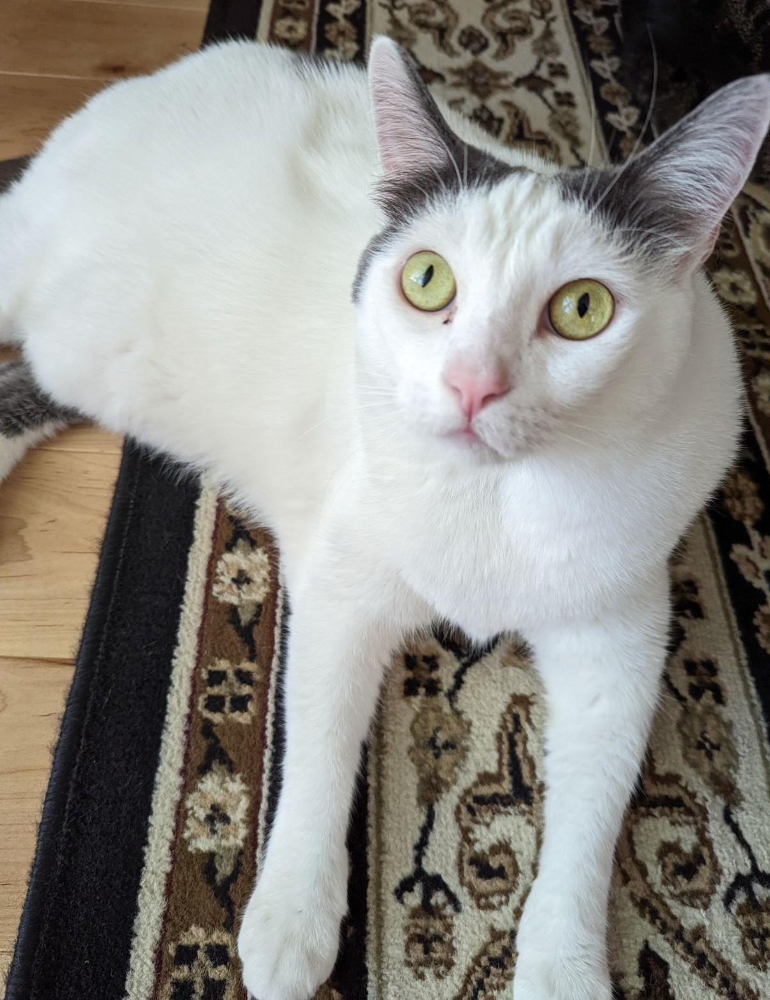

Waffles Chen
One of my dearest cats

Waffles staring into the camera
Fun Facts about Waffles:
- He is currently seven years old, and his birthday was March 9th, 2018.
- His unbiological sister is Lilac Chen, my other dearest cat.
- Waffles has a voracious appetite, so we had to put him on a diet. He lost 8 pounds, from 25 lbs to 17 lbs.
- Waffles loves chasing squirrels and flies. He gets rid of all the bugs in the house, except ants (he's afraid of ants).
- He is very independent and not clingy to us humans, but he still cares about us in his own way.
Here is more information about American Medium-Hair Cats if you ever plan on getting one!